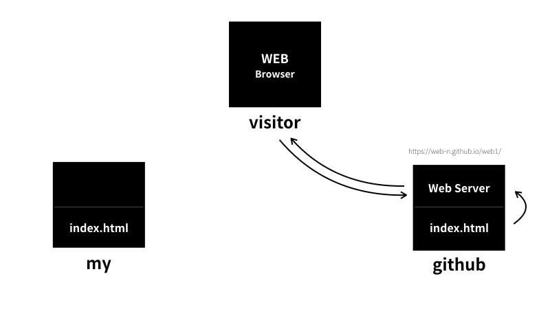

한글이 깨지는 경우는 웹페이지가 저장한 문자표현 방식과 웹페이지를 불러올때의 문자표현 방식이 다르기 떄문이다. 웹페이지를 저장할 때 UTF-8로 저장되었했다면 웹페이지를 불러올 때도 UTF-8로 불러와야 한다. 아래와 같이 UTF-8로 불러오도록 설정할 수 있다.
강조표시는 strong
Underline의 줄임말.
밑줄은 u
header의 줄임말.
Break의 줄임말.
대부분의 태그는 컨텐츠에 적용시키기 위해 감싸는 구조로 되어있지만
br, img, input, hr, meta 등은 컨텐츠에 적용시킨다는 개념이 아니기에 감싸지 않는다.
Paragraph의 줄임말.
단락을 표현할떄는 p를 쓰는데 일반적으로 br보다는 적게 쓰인다.
하지만 p태그는 css적용이 가능하지만 br태그는 css적용이 불가능하기에 용도에 따라 쓸 필요가 있다.
위에서 쓰인 style는 css라고 부른다.
Image의 줄임말. src는 Source의 줄임말.
src와 같은 것을 속성(attribute) 라고 한다.
ul은 Unordered Lists의 줄임말. li는 Listed Item의 줄임말.
가급적 부모(ul)-자식(li)관계로 쓰여야 한다.
ul은 li들을 그룹짓게 하며 li는 각 항목을 나타내게 된다.
ol은 Ordered List의 줄임말.
가급적 부모(ol)-자식(li)관계로 쓰여야 한다.
ol은 li에 순번을 노출시킬수 있게 해준다.
탭의 제목을 변경해준다.
검색엔진이 웹페이지를 분석할떄 title을 바라본다고도 한다.
html태그는 html내용물을 감싸는 태그이다. html은 HyperText Markup Language의 줄임말.
head태그는 본문 설명 태그이다.
body태그는 본문 태그이다.
Anchor의 줄임말. href는 Hypertext Refernce의 줄임말.
href는 이동하고자 하는 경로.
target="_blank"는 새창에서 웹 페이지 불러오기.
title은 툴팁이다.
사용자 = 클라이언트 = 웹 클라이언트 = 웹 브라우저
제공자 = 서버 = 웹 서버

작동원리
1. 사용자는 어떤 사이트를 들어가려고자 한다. (클라이언트)
2. 사용자의 컴퓨터는 들어가고자 하는 사이트의 파일에 해당하는 코드를 서버에 요청한다. (클라이언트 -> 서버)
3. 사용자의 요청을 전달받은 제공자의 컴퓨터는 요청한 코드를 찾는다. (서버)
4. 제공자의 컴퓨터는 사용자의 컴퓨터에게 요청한 코드를 제공한다. (서버 -> 클라이언트)
5. 사용자의 컴퓨터는 전달받은 코드를 읽어서 웹페이지를 화면에 출력하여 사용자에게 노출시킨다. (클라이언트)
지금까지 위에서 다룬 내용들은 전부 클라이언트에 해당하는 내용이었다.
웹 서버를 공부하기 위한 방법은 크게 2가지가 있다.
1. 웹호스팅 업체를 찾아 맛보기
2. 웹서버를 직접 설치 및 실행해보기
호스트 = 인터넷에 연결된 컴퓨터 하나 하나를 뜻 함.
호스트를 제공하는 업체를 웹호스팅 업체라고 함.
대표적인 업체로서 gitHub가 있다.


작동원리
1. 개발자는 자신이 생성한 파일을 웹호스팅 업체에 업로드 한다.
2. 웹호스팅 업체는 웹서버에서 전달받은 파일을 노출 시키며 이를 타 사용자가 볼 수 있도록 주소를 제공한다.
3. 사용자의 웹호스팅 업체에서 제공하는 주소를 통해 개발자가 생성한 작업물을 볼 수 있다.

http = 웹페이지를 주고받기 위한 통신 약속
IP Address = 0.0.0.0 ~ 255.255.255.255 까지 있으며 이 중 127.0.0.1은 내 컴퓨터를 가리킨다
Port = 컴퓨터에서 여러개의 서버가 동작하고 있을때 서버를 구분하는 정보
inline frame의 줄임말.
HTML 문서내에 다른 HTML 문서를 보여줄때 사용한다.
아래의 예제에선 동영상을 추가했다.